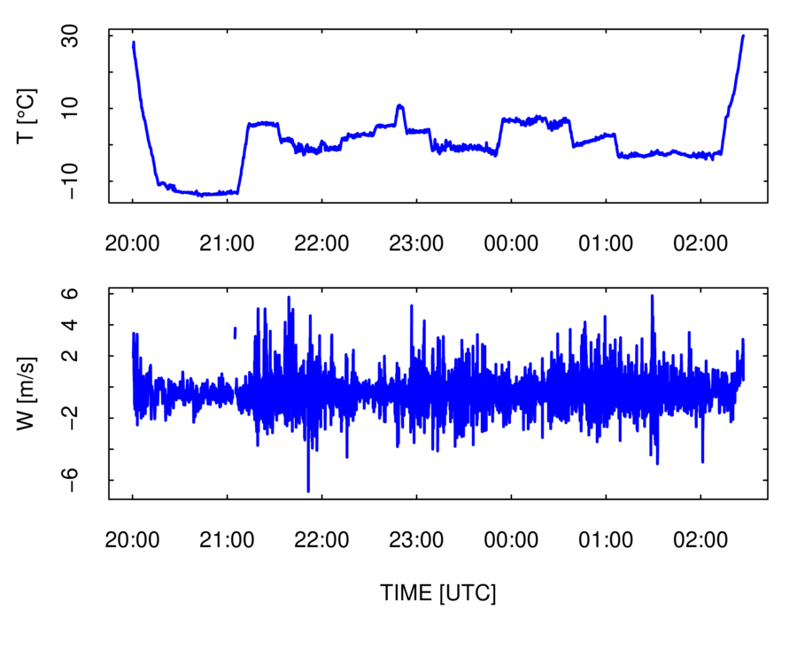

Next: 5. Variance Spectra Up: R4RAF Previous: 3. Overview of Ranadu


Next: 5. Variance Spectra Up:
R4RAF Previous: 3.
Overview of Ranadu
This chapter includes additional details about the plot functions available in Ranadu.
When constructing plots, the use of “pipes” makes the logic clear and is recommended, so that is described first. All the code sequences described here can be implemented by saving the result from each step and then providing it to the next step, but pipes support the transmission of the result of a calculation to the next stage in the calculation without the need for intermediate storage. They are supported using the “%>%” argument, which is enabled by the “magrittr” package for R. Perhaps the strongest argument for using pipes is that they make the logic of plot construction clear. You start with a data.frame, optionally construct new variables, make appropriate selection of variables and the time interval, apply filters to accept only data meeting particular tests, and then construct the plot using the resulting tailored data.frame. Here is an example, where the data.frame is piped to “select()” (part of the dplyr package that passes on only the listed variables) and where the result is then piped to “Ranadu::selectTime()” where only the specified time range is transmitted forward. The result is finally piped to Ranadu::plotWAC(), where the first argument is a data.frame. That is supplied by the pipe. The result is shown in Fig. 4.1. Alternately, ggplotWAC() could be used to produce a similar result. In addition to showing the explicit steps in the processing chain, code like this ensures that the plot will be constructed the same way if the code is re-used or moved.
## Generating R code:
library(magrittr)
Ranadu::getNetCDF(fname, Variables)
%>% ## load the data.frame
dplyr::filter(TASX
> 90)
%>% ##
limit based on airspeed
dplyr::select(Time,
ATX, DPXC) %>% ##
select the variables to plot
Ranadu::Rmutate(DPD
= ATX - DPXC) %>% ##
add the dewpoint-depression DPD
Ranadu::selectTime(220500,
221500) %>% ## set the time
range
Ranadu::plotWAC(col=c('blue',
'forestgreen', 'black')) ##
construct the plot
Figure 4.1: Example of a figure generated using pipes. The variables are air temperature (ATX), dew point temperature (DPXC), and a new generated variable representing the dew point depression (DPD = ATX -DPXC). From WECAN research flight 6, 3 August 2018.
|
More information on some of the utility functions used or available when constructing plots is provided in the following list:
dplyr::filter(): This function is used to limit the range of accepted values. The arguments are a data.frame (provided above by the pipe) and a logical statement. Only rows for which the specified test is true are included in the resulting data.frame. An example where a statement like this might be useful is when fitting to determine the sensitivity coefficients for angle of attack, because it is useful to exclude slow flight when the gear and/or flaps might be deployed. Be sure to use the version from dplyr; the filter functions from the packages “stats” or “signal” have different behavior. An alternative method of creating a subset is to use the notation “Data[Data$TASX > 90, ]”. The disadvantage of this method and of the “select(Data, Data$TASX > 90)” function provided by base-R is that variable attributes are lost.4.1
dplyr::select(): This function creates a subset data.frame with only the desired variables. The desired list of names can be specified either as character names (with quotes) or variable names (without quotes). This also has the advantage over the “[]” or “[[]]” methods of subsetting that attributes of the data.frame and the variables are preserved.
Ranadu::Rmutate( ): This function adds new variables to the data.frame according to formulas specified in the second argument. In this processing chain, the first argument is the data.frame provided by the pipe. This calls the routine dplyr::mutate() but then, because that function does not preserve variable attributes, it transfers attributes from the input to the output data.frame. New variables, however, have no attributes (even the “Dimension” attribute) so the resulting data.frame has some limitations, notably not being accepted by “makeNetCDF( )”.
Ranadu::selectTime( ): This function limits the time range of the resulting data.frame to be between the times that are specified in HHMMSS format (hours, minutes, seconds). This is equivalent to using “dplyr::filter( )” with limits on the accepted times, but it avoids the need to provide those times in the POSIXct format used by Ranadu data.frames. It preserves attributes and is suitable for use in pipes.
Ranadu::Rsubset( ): This is not used in the present example but could be. It accepts start and end times like “selectTime”, selects variables like “dplyr::select”, and imposes limitations on the data like “dplyr::filter( )”, so several functions could be combined in one step: Ranadu::getNetCDF(fname, Variables) %>% Ranadu::Rsubset(220500, 221500, c('ATX', 'DPXC')) %>% plotWAC( ). This function also preserves attributes in the modified data.frame.
“Ranadu::plotWAC( )” is designed primarily for time-series plots, but scatterplots can also be generated. In that case, the first two variables in the data.frame should be the variables for the scatterplot, not the Time variable, and an explicit label “xlab=xxx” should be supplied. Here is an example:
## Generating R code:
Data %>%
selectTime(220000, 221500)
%>%
dplyr::select(ATX,
DPXC) %>%
plotWAC(xlab='ATX',
type='p')
Figure 4.2: Example scatterplot.
|
It is often desirable to combine several plots into a single plot. There are several ways to do this with Ranadu routines:
The “layout()” function in base-R can be used. Here is an example. The matrix layout can also be used to display plots in multiple columns or in multiple rows and columns.
## Generating R code:
layout(matrix(1:2,
ncol=1),
widths=c(8,8), heights=c(5.5,8))
op <- par (mar=c(2,4,1,1)+0.1,
oma=c(1.1,0,0,0))
Data %>%
dplyr::select(Time, ATX) %>%
plotWAC(ylab=expression(paste("T
[", degree, "C]")))
op <- par
(mar=c(5,4,1,1)+0.1)
Data %>%
dplyr::select(Time, WIC) %>%
plotWAC(ylab=expression(paste('W
[m/s]')))
Figure 4.3: Two-panel figure.
 |
The function Ranadu::ggplotWAC( ) is based on the ggplot2 package for R, which provides extensive plotting capabilities and is highly recommended. What is provided via ggplotWAC( ) is a very simplified and restricted approach, but it might be useful in preliminary applications. See this URL for information on ggplot2. The Ranadu routine provides two approaches to multiple plots:
“facets”: If the argument “panels” is supplied (e.g., panels=N), ggplotWAC( ) will construct N vertically aligned panels. All will contain time-series plots. The first-argument to ggplotWAC(), the data.frame, should contain the variable “Time” and N*M variables, where the first M variables will be plotted in the first panel, the next M in the second panel, etc. A set of M character-mode labels should be supplied via labelN.
“viewports”: An optional argument “position=c(i, j)” can be used to place a plot in the ith of j vertically aligned viewports.
Examples are shown in Figs. 4.4 and 4.5. An advantage of the faceted plot is that vertical alignment of the plots is ensured; this can be a problem with other plots if the axis labels are of different size in the different plots.4.2 In the second case, the viewports are positioned so that the abscissa labels and title are obscured for the top plot. The intent is that this should be used for identical time scales for each plot, so that it is not necessary to duplicate the axis labels and title.
## Generating R code:
Project
<- 'WECAN' ##
faceted plot with ggplotWAC()
Flight
<- 5
V <-
c('ATH1', 'ATH2', 'ATF1',
'RTH1', 'RTH2',
'RTF1')
fname <- sprintf('%s%s/%srf%02d.nc',
DataDirectory(), Project, Project,
Flight)
suppressWarnings (
getNetCDF(fname, V, 200000,
201500) %>%
ggplotWAC(panels=2,
col=c('blue',
'darkorange', 'forestgreen'),
ylab=expression(paste('temperature
[', degree,'C]')),
lwd=c(1.5,
0.8, 1), lty=c(1,2,1),
labelP=c('
air temperature', ' recovery temperature'),
labelL=c('H1',
'H2', 'F1'),
legend.position=c(0.5,0.95)
)
)
Figure 4.4: Example of a faceted ggplotWAC plot. Three temperature measurements are shown from probes identified as H1, H2, and F2. The top panel shows the air temperature, and the bottom panel the directly measured recovery temperature before correction for dynamic heating.
|
## Generating R code:
## viewport-plot with
ggplotWAC()
DG <-
getNetCDF(fname, V, 200000,
201500)
with(DG,
ggplotWAC(data.frame(Time, ATH1),
position=c(1,2)))
with(DG,
ggplotWAC(data.frame(Time, ATF1), position=c(2,2)))
Figure 4.5: An example of selecting the figure position using viewports and the "position" argument to ggplotWAC().
|
A scatterplot like that in Fig. 4.2 often is used to show a two-dimensional display of where events occur. Such plots are useful when the number of events is small, but for large numbers of events the overlap of points can obscure relationships. The base-R function “smoothScatter()” is one option for plotting the density of points in such cases. Another is the “filled.contour()” function. Ranadu provides a third option in the function Ranadu::contourPlot(). The number of bins, colors, and linear vs. logarithmic density intervals can be provided as arguments to this function, although the defaults often work acceptably. The following figure and code illustrates the use of this plot. Additional more elegant solutions are provided by the ggplot2 package.
## Generating R code:
getNetCDF(fname)
%>% dplyr::select(ATX,
DPXC) %>%
contourPlot(title='WECAN
flight #5')
Figure 4.6: Example of a density plot generated using Ranadu::contourPlot().
|
Ranadu provides the “binStats()” function to compile variable characteristics needed to generate plots like error-bar plots and box-and-whisker plots. The input should be a data.frame whose first two columns specify the expected respective ordinate and abscissa variables. Each row in the data.frame is assigned to a bin on the basis of the value of the second variable, and for each bin the mean, standard deviation, and number of events are accumulated for values of the first variable in the data.frame. The output from binStats() is a new four-column data.frame where the respective columns are the mean value of the abscissa for each bin, the mean value of the ordinate for all events in the bin, and corresponding standard deviation, and the number of events in the bin.
## Generating R code:
getNetCDF(fname)
%>%
Rmutate(DPD=ATX-DPXC)
%>% ##
define dew-point-depression variable
dplyr::select(DPD,
GGALT) %>%
binStats() %>%
ggplot(aes(x=xc)) +
geom_point(aes(y=ybar), color='blue') +
geom_errorbar(aes(ymin=ybar-sigma,
ymax=ybar+sigma))
+
xlab('geometric altitude
[m]') +
ylab(expression(paste('dew
point depression [', degree, 'C]'))) +
theme_WAC()
Figure 4.7: Example of an error-bar plot generated using binStats().
|
The following code creates Fig. 4.8, an example of creating a box-and-whisker plot. When used with the argument “addBin = TRUE”, binStats instead returns a modified data.frame with a variable “BIN” added that is suitable to use when grouping in ggplot aesthetics.
## Generating R code:
getNetCDF(fname) %>%
dplyr::select(DPXC,
GGALT) %>%
binStats(addBin
= TRUE) %>%
ggplot() + geom_boxplot(aes(GGALT,
DPXC, group=BIN),
color='blue',
na.rm=TRUE) +
theme_WAC()
Figure 4.8: An example of a box-and-whisker plot.
|
Ranadu incorporates the ability to plot a set of measurements on the background of a skew-T diagram. The background is non-standard and is described in detail in this document. The “Ranadu::SkewTSounding()” function should be called with a data.frame containing measurements of pressure, temperature and dewpoint, which may be named either (“PSXC”, “ATX”, “DPXC”) or (“Pressure”, “Temperature”, “DewPoint”). A skew-T background is generated using the Ranadu data file “skewTDiagram.Rdata” and the values from the input data.frame are optionally averaged in pressure intervals and then plotted on this background. Figure 4.9 is an example of this plot.
## Generating R code:
Project
<- 'PREDICT'
Flight <- 11
fname <- sprintf ('%s%s/%srf%02d.nc', DataDirectory(),
Project,
Project,
Flight)
getNetCDF(fname) %>%
selectTime(0,
150000) %>%
SkewTSounding(AverageInterval=10)
Figure 4.9: Sounding from PREDICT flight 11.
|
The Ranadu function “plotSD()” displays the size distribution measured by various probes that produce arrays of measurements. The data.frame containing these measurements is special in that the column corresponding to a variable name like “CCDP_RPC” is a two-dimensional vector. This makes the data.frame inconsistent with the “tidy” structure and with the structure required for a “tibble”, so some special considerations are required if an analyst wants to use only tidy data. In this section, those considerations are not discussed further because the “plotSD()” function assumes Ranadu-style data.frame conventions.
“Ranadu::getNetCDF()” accepts variable names like “CCDP_”, in which case it searches for the first variable starting with that name. This avoids the need to know the location of the CDP probe in various projects. However, if there are multiple probes with the same prefix name, they need to be specified in the variable list used to construct the data.frame.
An example, Fig. 4.10, shows code that will construct a plot of the size distribution from several probes. The “exceedance” is added when the argument “CDF=TRUE” is used; it is the complement to a cumulative distribution and shows the fraction of particles that exceed the plotted size. The four numbers returned from the function are the mean concentration, mean diameter, standard deviation in the diameter, and liquid water content under the assumption that all particles are liquid. It is also possible to construct a plot of the distribution in liquid water content, as shown in Fig. 4.11. See “?Ranadu::plotSD” for more options including alternate specification of the size limits, bins to include, and log vs linear axes.
## Generating R code:
getNetCDF('/Data/CSET/CSETrf06.nc',
c('CCDP_',
'C1DC_', 'CUHSAS_')) %>%
selectTime(173000,
173500) %>%
plotSD(CellLimits=NA,
logAxis='xy', CDF=TRUE)
Figure 4.10: Example of a size distribution.
|
## Generating R code:
getNetCDF('/Data/CSET/CSETrf06.nc',
c('CCDP_',
'C1DC_', 'CUHSAS_'))
%>%
selectTime(173000,
173500) %>%
plotSD(CellLimits=NA,
logAxis='xy', LWC=TRUE, CDF=TRUE)
Figure 4.11: Example of a distribution in liquid water content.
|


Next: 5. Variance Spectra Up:
R4RAF Previous: 3.
Overview of Ranadu